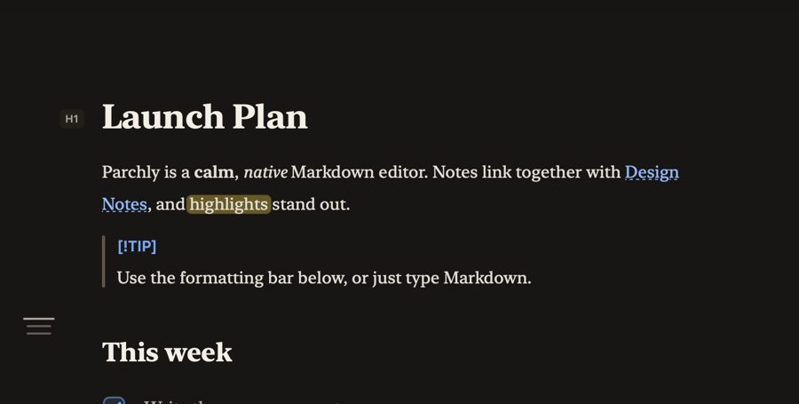

Markdown that reads like a page.
Parchly is a free, native Markdown editor for Mac. Write on a calm page or use the formatting bar, and every .md file stays plain text on disk.
Free · MIT · macOS 14+ · Apple silicon & Intel · updates itself
This window is real. Type in it.
Install from Terminal
curl -fsSL https://tapariapurv.github.io/parchly/install.sh | bashInstalls into Applications, turns on Quick Look and opens Parchly. Or get the disk image · install guide.
The difference
Press Space on a Markdown file. This is what macOS shows you.

Quick Look · same file, same bytesPlain text
- HeadingsReal type, not pound signs.
- TasksCheckboxes you can see.
- TablesPipe rows become a grid.
- CalloutsGitHub alerts, drawn natively.
- Highlights
==text==stands out. - CodeColour from the app's own themes.
Markdown deserves to feel like a document. Real typography, native shortcuts, and the source one keystroke away. No vault, no library, no account.
The film · 0:37
See it in 37 seconds.
Typing, the formatting bar, three views, nine themes and Quick Look in one short film. Sound on.
Document mode
Type Markdown.
Read a page.
Syntax shows only on the line you're writing. Move on and the markers fade, so the page reads like a finished document. Don't know Markdown? The formatting bar has a button for everything, and each one teaches you its shortcut.
Plain files
Your notes stay yours.
No library, no database, no account. Parchly opens .md files wherever they live and writes them straight back, so every other app can open them too.
- Your files are the only source of truth
- iCloud Drive, Dropbox, any folder
- No account, no telemetry, no lock-in
- Renders in Finder with Quick Look
Edit in place
Headings, bold, links, code, tables and checkboxes render as you type. Syntax shows only on the current line.
Lists that keep up
Return continues bullets, numbers and tasks. Tab nests an item, and numbered lists renumber themselves.
Real tables
Pipe tables show as a grid. Tab moves between cells and tidies the source, and Return adds a row.
Linked notes
[[Note]], [[Note#Heading]] and #anchor links. ⌘-click to follow, or to create a note that doesn't exist yet.
Math & diagrams
KaTeX math, Mermaid diagrams and colour-coded code in the live preview, all bundled and offline.
Quick Look
Press Space on any .md file in Finder to see it rendered without opening an app.
Find anything
⌘P finds every Markdown file in the folder. ⇧⌘O jumps to any heading.
A proper Mac app
Autosave, Versions, tabs, Find & Replace, export to PDF and HTML, Liquid Glass, and automatic updates.
Themes
Nine themes. One calm page.
This page uses the app's own palettes. Pick one and the whole site changes with it, including the editor up top.

The real app
Document, Source and Preview.
⌃⌘1 Document · ⌃⌘2 Source with optional line numbers · ⌘\ live side-by-side preview.

Compatibility
Every Markdown you write.
CommonMark and GitHub Flavored Markdown, plus the extensions people actually use.
| Element | Editor | Preview & export | Quick Look |
|---|---|---|---|
| Headings (ATX & setext), paragraphs, emphasis, strong, links, images | yes | yes | yes |
| Lists, nested lists, task lists | yes | yes | yes |
| Tables with alignment | yes | yes | yes |
| Code spans & fenced code with syntax colouring | yes | yes | yes |
Blockquotes & GitHub alerts ([!NOTE], [!WARNING]…) | yes | yes | yes |
| Strikethrough, autolinks, footnotes, raw HTML, YAML front matter | yes | yes | yes |
==highlight==, :emoji:, heading anchors | yes | yes | yes |
[[Wiki links]] & cross-references | yes | yes | yes |
Math $…$ / $$…$$ (KaTeX) | yes | yes | source |
| Mermaid diagrams | yes | yes | source |
Install
Install in under a minute.
Parchly needs macOS 14 Sonoma or later, on Apple silicon or Intel.
Paste one line
Open Terminal (⌘Space, type “Terminal”), paste this and press Return. It downloads the latest release, installs it into Applications, turns on Quick Look and opens Parchly.
curl -fsSL https://tapariapurv.github.io/parchly/install.sh | bashOr drag and drop
Download Parchly.dmg, open it and drag Parchly onto Applications. The app isn't notarized by Apple yet, so the first time you open it, go to System Settings › Privacy & Security and click Open Anyway. You only do this once.
Make it your Markdown app
Select any .md file in Finder, choose Get Info, set Open with to Parchly and click Change All. If another app previews Markdown, choose Parchly under System Settings › General › Login Items & Extensions › Quick Look.
That's it
Parchly checks for updates daily and installs them in the background. Change this, or check now, in Settings › Updates. To uninstall, drag Parchly to the Trash.
Keyboard first
Every command has a key.
Everything is in the menu bar, and Help search (⇧⌘/) works as a command palette.
| Action | Keys | Action | Keys |
|---|---|---|---|
| Bold · Italic · Strike | ⌘B ⌘I ⇧⌘X | Heading 1–6 · Body | ⌘1–⌘6 ⌘0 |
| Inline code · Link | ⌃` ⌘K | Bullets · Numbers · Tasks | ⇧⌘8 ⇧⌘7 ⇧⌘9 |
| Tick a task | ⌘L | Quote · Code block · Table | ⌥⌘Q ⌥⌘C ⌥⌘T |
| Indent · Outdent | ⌘] ⌘[ | Move line · Duplicate | ⌃⌘↑↓ ⇧⌘D |
| Document · Source · Preview | ⌃⌘1 ⌃⌘2 ⌘\ | Go to file · heading | ⌘P ⇧⌘O |
| Formatting bar | ⇧⌘B | Settings | ⌘, |
Questions
Good to know.
Is Parchly really free?
Yes. Parchly is free and open source (MIT). There's no account, subscription, tracking or data collection. See the privacy policy.
Do I need to know Markdown?
No. The formatting bar and the Format menu do everything for you. Parchly also opens a short guide the first time you launch it (Help › Markdown Guide).
Where are my notes stored?
Wherever you save them: ordinary .md files in any folder, including iCloud Drive or Dropbox. Parchly has no database, so other apps can open the same files.
Can I link notes together?
Yes. Type [[Another Note]] to link to a note in the same folder, or [[Another Note#Heading]] to link to a section. ⌘-click a link to follow it. If the note doesn't exist, Parchly creates it.
Does it support math, diagrams and GitHub Markdown?
Yes: GitHub Flavored Markdown (tables, task lists, footnotes, strikethrough, autolinks, alerts), plus KaTeX math and Mermaid diagrams in the preview. See the support table.
How do I update Parchly?
You don't need to: it updates itself. To check right away, choose Parchly › Check for Updates.
Free. Open source.
MIT. No account.
No telemetry, no cookies, no subscription. Your notes stay ordinary files on your Mac, and this site doesn't track you either.
macOS 14+ · Parchly.dmg · or curl -fsSL https://tapariapurv.github.io/parchly/install.sh | bash